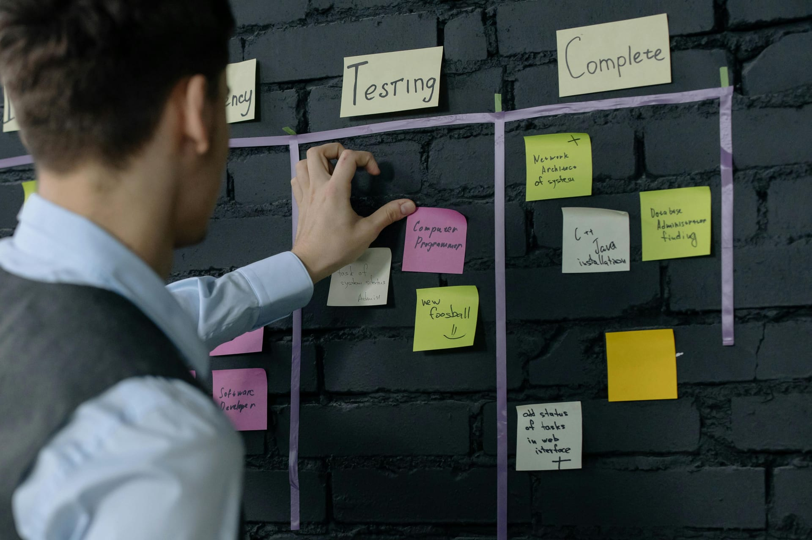
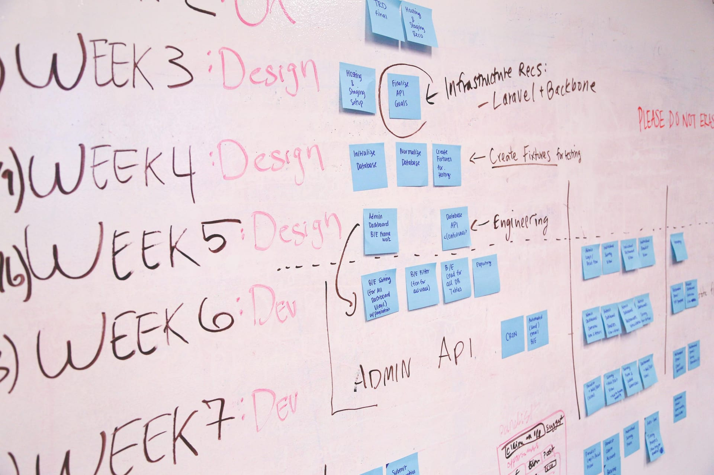
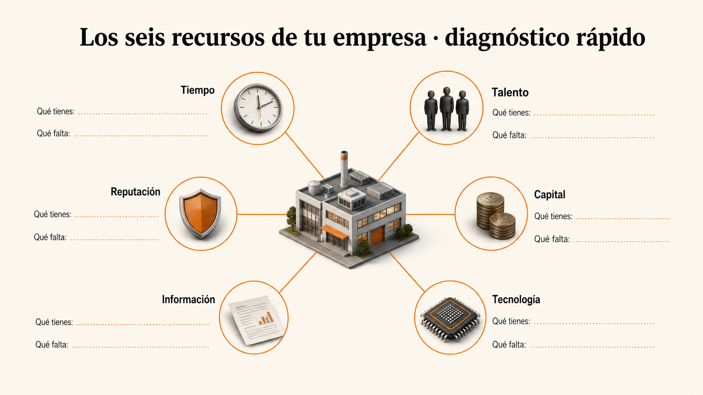
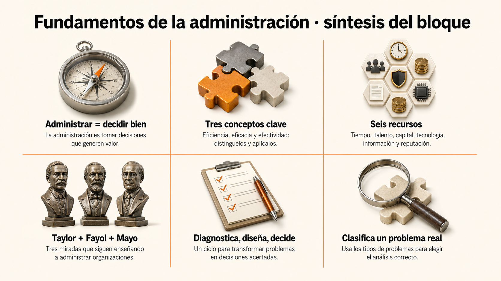

Fundamentos de la administración.
Toda empresa que conoces —desde la tienda de tu barrio hasta Bavaria— tiene a alguien tomando decisiones todos los días: a quién contratar, qué precio cobrar, cómo organizar a la gente. Eso es administrar. En este bloque vas a entender de dónde sale esa disciplina y cómo leer cualquier organización con criterio.
Reconozco los fundamentos de la administración mediante el estudio de sus conceptos esenciales, recursos empresariales y escuelas del pensamiento administrativo para interpretar cómo operan las organizaciones en su contexto.
Administrar no es solo mandar: es lograr que las cosas pasen.
Si alguna vez organizaste un viaje con amigos, ya administraste algo: tuviste que decidir destino, repartir gastos, ponerle ritmo al grupo y verificar al final si valió la pena. Administrar una empresa es eso mismo, pero con mucho más en juego.

Imagina una panadería del barrio. Cada mañana alguien decide qué hornear, cuánto hornear, quién atiende la caja y a qué precio vender. Si esa persona decide bien, el pan se vende y la panadería sigue abierta. Si decide mal —por ejemplo, hornea poco y se queda sin pan a las 10 a.m.— pierde plata y clientes. Esa persona es la que administra.
En una empresa, administrar significa definir prioridades, organizar el trabajo, guiar a las personas y verificar si las decisiones están produciendo valor. No se reduce a dar órdenes: implica entender al mismo tiempo lo humano, lo técnico y lo económico.
Se estudia como disciplina porque tiene conceptos propios, métodos comprobados y una historia que nos dice qué funciona y qué falla. Lo que aprendas aquí te servirá para interpretar decisiones gerenciales que verás cada día en las noticias y en cualquier empresa donde trabajes.
+ ¿Una empresa puede ser eficiente y no ser eficaz?
Sí, y es uno de los errores más comunes. Imagina una fábrica que produce 1.000 sillas al día con cero desperdicio (super eficiente), pero resulta que nadie quiere ese modelo de silla. Es eficientísima haciendo algo que nadie le compra. Es ineficaz.
Lo contrario también pasa: una empresa logra su objetivo (es eficaz) pero gasta el doble de lo necesario en lograrlo (ineficiente). Las dos fallas son comunes. Un buen administrador busca las dos cosas al tiempo.
Después de este bloque podrás analizar la administración como una disciplina: conectar sus conceptos, su historia y su rol profesional para interpretar decisiones que se toman en organizaciones reales hoy.
Tres palabras que se parecen pero no son lo mismo.
Administración, organización y gestión suenan parecidas y a veces se usan como sinónimos. No lo son. Fíjalas bien ahora porque las vas a usar todo el programa.

Administración · el proceso completo
Es el proceso de planear, organizar, dirigir y controlar los recursos de una empresa para alcanzar sus objetivos de forma eficiente y eficaz. Es lo que vas a aprender a hacer en esta carrera. Piensa en ella como el «libreto» completo del negocio.
Organización · el escenario donde todo pasa
Es el sistema social compuesto por personas, procesos, tecnología, reglas, cultura y objetivos. Es el lugar donde aplicas la administración. Toda empresa, ONG, hospital o universidad es una organización. Tu colegio, un equipo de fútbol y la Alcaldía también.
Gestión · la práctica diaria
Es la capacidad cotidiana de tomar decisiones, asignar recursos, resolver tensiones y dar seguimiento a resultados. Si administrar es escribir el libreto, gestionar es actuarlo todos los días. Requiere criterio técnico y sensibilidad humana al tiempo.
La administración es el proceso de planificar, organizar, dirigir y controlar el uso de los recursos para alcanzar los objetivos organizacionales de manera eficiente y eficaz.
Verdadero o falso
«Una empresa puede ser eficiente (usa pocos recursos) pero, al mismo tiempo, ineficaz (no logra el resultado que importa)».
Toda decisión gerencial mueve al menos uno de estos seis recursos.
Cuando alguien dice «hay que mejorar la empresa», en realidad está hablando de cambiar algo de estos seis. Aprender a verlos por separado es el primer paso para tomar decisiones con criterio en cualquier cargo gerencial.
Cuando un gerente dice «vamos a contratar dos diseñadores nuevos», en una sola frase está moviendo cinco recursos al tiempo: capital (los sueldos), talento (sus capacidades), tiempo (cuánto tarda en buscarlos), tecnología (equipos y software) e información (los datos que les pasen para trabajar). Por eso ninguna decisión gerencial es tan «simple» como suena.
Tiempo
Prioridades, calendario, ciclos de mejora y oportunidad.
Talento
Capacidades, motivación, liderazgo, cultura y aprendizaje.
Capital
Presupuesto, flujo de caja, inversión y sostenibilidad.
Tecnología
Herramientas, datos, automatización y productividad.
Información
Indicadores, diagnósticos, evidencia y retroalimentación.
Reputación
Confianza de clientes, aliados, comunidad y colaboradores.

Diagnostica una empresa real en seis preguntas
Esta plantilla descargable te da seis casillas: una por cada recurso (Tiempo, Talento, Capital, Tecnología, Información, Reputación). En cada una escribes lo que la empresa tiene y lo que le falta.
Es el mismo ejercicio que hace un consultor cuando entra por primera vez a una organización. Si la usas con una empresa que conoces, ya estás haciendo administración aplicada.
De la eficiencia mecánica a la empresa como sistema humano.
Tres escuelas marcaron la forma en que entendemos hoy la administración. Cada una aporta una lente útil; ninguna agota la realidad organizacional.
Línea de tiempo
Administración científica
Taylor estudia el trabajo como ingeniero: tiempos, movimientos, eficiencia.Teoría clásica
Fayol observa la empresa completa: funciones, estructura, dirección.Relaciones humanas
Mayo descubre que el grupo, el clima y la pertenencia mueven la productividad.Lo que aporta y lo que limita a cada escuela
Propuso estudiar el trabajo de forma sistemática: medir tareas, eliminar movimientos innecesarios, estandarizar métodos y aumentar productividad.
Orden, medición, especialización y eficiencia.
Puede reducir a la persona a un ejecutor si se aplica sin criterio humano.
Observó la empresa desde la dirección general. Sus principios dieron forma a funciones, jerarquías, unidad de mando, coordinación y responsabilidad.
Claridad de autoridad, estructura y funciones administrativas.
Puede volverse rígida si la estructura pesa más que el propósito.
Los estudios de Hawthorne mostraron que la productividad también depende de pertenencia, atención, comunicación y clima social.
Motivación, escucha, cohesión y seguridad psicológica.
No reemplaza la necesidad de procesos y objetivos claros.
Una organización necesita eficiencia, estructura y humanidad.
El administrador moderno no elige una sola escuela: integra herramientas según el problema, el contexto y las personas involucradas. Taylor te ayuda a medir, Fayol a estructurar y Mayo a escuchar; en una decisión real probablemente uses las tres.
Una empresa decide cronometrar cada movimiento de sus operarios para detectar pasos innecesarios y optimizar la producción. ¿Qué escuela administrativa está aplicando?
Ordena las 3 escuelas cronológicamente
Arrastra las tarjetas para colocarlas en el orden en que aparecieron históricamente. Cuando termines, presiona «Comprobar».
-
Administración científica · Taylor Mide tiempos y movimientos para optimizar la producción.
-
Teoría clásica · Fayol Mira la empresa completa: funciones, jerarquía, dirección.
-
Relaciones humanas · Mayo Descubre que el grupo, el clima y la pertenencia mueven la productividad.
Qué hace, en concreto, un administrador de empresas.
En lugar de una lista abstracta de funciones, mira el rol como cuatro verbos que se encadenan. Cada decisión gerencial seria pasa por los cuatro.
Lees datos, escuchas a personas, identificas causas y distingues síntomas de problemas reales.
Construyes planes, procesos, estructuras, equipos y mecanismos de seguimiento.
Priorizas recursos cuando hay incertidumbre, presión y consecuencias humanas.
Conectas propósito, comunicación, liderazgo y motivación para lograr ejecución.
El gerente de una cadena de gimnasios se entera que un local lleva tres meses con baja en asistencia. ¿Por cuál de los cuatro verbos debería empezar?
Por diagnosticar. Sin entender por qué bajó (¿abrieron un gimnasio nuevo cerca?, ¿hay descontento con el personal?, ¿cambió el horario del trabajo de los socios?), cualquier decisión es a ciegas. Solo después de diagnosticar tiene sentido diseñar un plan, decidir qué cambiar y movilizar al equipo para ejecutarlo. Saltarse el primer paso es la causa más común de fracasos gerenciales.
Lunes 7:00 a.m. — el equipo está apático
Eres administrador de una panadería. Los panaderos llegan tarde, la calidad bajó y las ventas cayeron 12 %. Tienes una decisión esta semana.
¿Qué haces primero como administrador?
Buen primer paso. Descubres que el horario cambió hace 3 semanas y nadie se adaptó. Ahora viene la decisión 2.
Ya tienes la causa. ¿Qué haces ahora?
Saltaste el diagnóstico. Las llegadas tarde son un síntoma, no la causa. Sancionar enfría aún más al equipo y pierdes información valiosa.
¿Reconsideras?
Saltaste el diagnóstico. El precio probablemente no es la causa (calidad y atención bajaron). Sacrificas margen sin atacar la raíz.
¿Qué haces ahora?
Diagnosticaste, diseñaste y movilizaste. Los cuatro verbos del rol profesional. En 2 semanas el ánimo sube, la calidad se recupera y las ventas vuelven al nivel. Esto es administrar bien.
Te faltó movilizar. Imponer una decisión sin consensuar a un equipo apático aumenta resistencia. La causa estaba bien identificada, pero el cambio se aplica con fricción y demora más en estabilizarse.
Atacas síntomas sin causa. En 30 días la rotación crece, la calidad sigue cayendo y el margen se erosiona. La lección: saltarse el diagnóstico es la causa más común de fracasos gerenciales.
Pon a prueba lo que acabas de aprender.
Antes de seguir, haz este ejercicio breve. No tiene respuesta única: lo importante es que clasifiques con criterio.
Analiza una empresa que conozcas
Piensa en una empresa cercana (donde trabaja alguien de tu familia, un comercio del barrio, una marca que admires) y elige un problema reciente que esté enfrentando. Clasifícalo en una de estas cinco categorías: eficiencia, estructura, motivación, estrategia o control. Esta clasificación será la base del caso integrador del programa.

Los 6 temas del bloque, en una sola página
Una hoja con los conceptos clave: qué es administrar, los tres conceptos esenciales, los seis recursos, las tres escuelas (Taylor, Fayol, Mayo) y los cuatro verbos del rol profesional.
Útil como repaso rápido antes de seguir, o como material para revisar después de meses. Imprímela y pégala donde la veas mientras estudias el bloque 2.